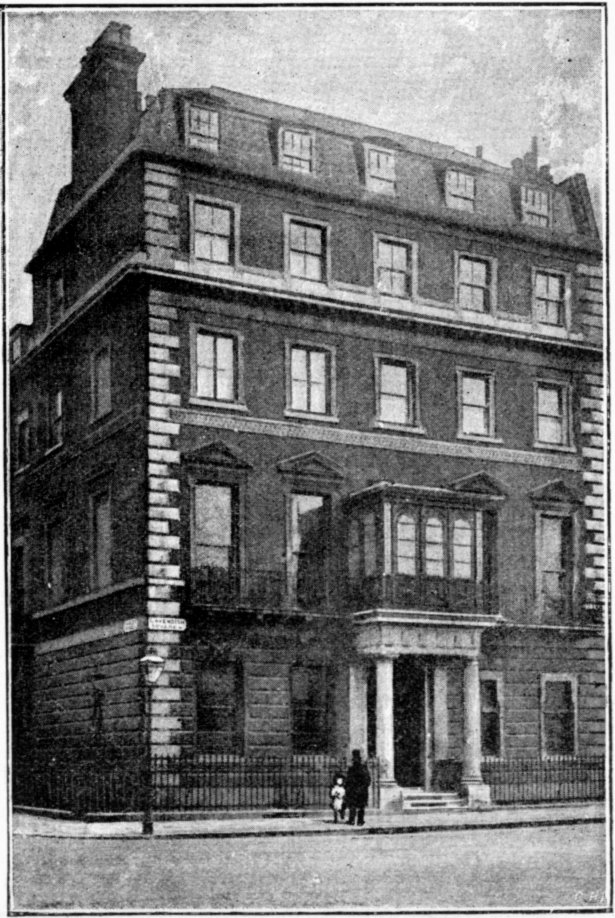

Personal Reminiscences of Sir Andrew Clark.
BY E. H. PITCAIRN.
{kind=link}
With a heartfelt pang, hundreds read in an evening paper on October 20th of the serious illness of Sir Andrew Clark, so truly spoken of by George Eliot as "the beloved physician." Only the previous day he had presided at the Annual Harveian Oration as President of the College of Physicians.
He had more than one warning by severe attacks of illness, and by the recurrence of very painful symptoms, that he was over-taxing his strength, but they were unheeded. A patient once told him he had a horror of having a fit. "Put it away," said Sir Andrew; "I always do." There was only one person to whose fatigue and exhaustion he was indifferent that was himself.
It is said that he always hoped to die in his carriage or consulting-room, and it was in the latter, while talking with a lady (the Hon. Miss Boscawen) about some charity, that he was seized with the illness which ended so fatally. In his case it is no morbid curiosity which makes thousands interested in every detail concerning him.
On one day as many as six hundred people, several of whom were quite poor patients, called to ask how he was, and daily inquiries from all parts, including the Royal Family were a proof how much he was respected. Very peacefully, on Monday, November 6th, about five o'clock, he passed away, and on the following Saturday, after a service at Westminster Abbey, he was buried at Essendon, near Camfield, the property he had so lately bought and where he spent his last holiday. The world has already been told how the English nation showed their respect for the President of the College of Physicians, and in him the profession he so dearly loved was honoured.
What was the reason of this demonstration of respect? Because individuals seem to have felt a sense of irreparable loss. Very many have the idea that there are few others with his gifts who would respond in the same way to their demand for sympathy and help; for Sir Andrew's interest in each patient was real. There was an attractive force about him, difficult to describe, and which only those who knew him could understand, for he was nothing if not original. It is impossible in this brief sketch to give an adequate portrait of a great personality and to tell the story of his life's work. I shall but try to mention some of his distinctive qualities and characteristics, illustrated by a few facts. Two or three real incidents sometimes give a better idea of a man's character than pages of generalities.
THE GRAVE IN ESSENDON CHURCHYARD.
From a Photo. by Mavor & Meredith.
{kind=link}
Sir Andrew was born at Aberdeen in October, 1826. His father died when he was seven years old, and his mother at his birth. To the end of his life he regretted never having known a mother's love. His childhood, spent with two uncles, does not seem to have been very happy, and he had no brother or sister. He was educated at Aberdeen and Edinburgh, and at the former place took his degree.
As a young man he gained first medals in anatomy, physiology, chemistry, botany, materia medica, surgery, pathology, and practice of physic.
At twenty-two, in very delicate health, he entered the Royal Navy as assistant-surgeon, and was appointed to the hospital at Haslar. His subsequent medical career is pretty generally known. He obtained almost every possible honour, culminating in the Presidency of the College of Physicians for the lengthy term of six years.
Sir Andrew was devoted to the College. He made an excellent President, and a dignified, courteous, and just chairman. His successor will find it no easy task to fill his place.
He took an intense interest in all that concerned the welfare of the College, and gave many proofs of his affection, one of the last being a donation of £500 last year towards its redecoration. Not a great many laymen know the College by sight. It is a corner building in Trafalgar Square, the entrance facing Whitcomb Street. The meetings of the Fellows are held in the magnificent library, lined with 60,000 volumes, chiefly classics. Opening out of the library is the Censors' room, panelled with old oak, and hung with portraits of former Presidents, chiefly by old masters. At an examination the President sits at the end of the table with his back to the fireplace, the Registrar (Dr. Liveing) opposite, and the Censors on either side. In front of the President is a cushion with the Caduceus, the Mace, and the Golden Cane. It was in the library that Sir Andrew presided at the Harveian Oration the day before he was taken ill.
Sir Andrew could not be judged of by the surface. As Sir Joseph Phayres truly says: "I have known him intimately, and the more I knew him the more I respected and admired him." Those who knew him best loved him best. One has only to read how one leading man after another writes of him with enthusiastic appreciation (in the Medical Journal) to learn what his colleagues thought of his medical skill and personal character.
A bishop recently spoke of him as the truthful doctor: and a young girl, who from a small child had stayed with him, told me he would always correct himself if he had told an anecdote the least inaccurately; and one day this summer when walking round their garden with him she said the caterpillars had eaten all their gooseberry trees; "I mean the gooseberry leaves," she added. Sir Andrew immediately said, "I am glad you are particular to say what is exactly true"; but, she added, there was always something to remember in everything he said. With regard to another point, a clergyman who knew Sir Andrew very intimately once told me that "No man of this century had a more keenly religious mind; he was so saturated with thoughts of God and so convinced that God had spoken to man. He was intensely religious, with a profound sense of the supernatural; he certainly was a great example to very busy men in the way he always managed to find time for church, and even when called away to a distance he would, if possible, go to a church near where he happened to be." In addition to these qualities, he was very just, sympathetic, and generous.
{kind=link}
I have come across many friends who knew him well, and it is interesting to note that the same cardinal points seem to have struck everyone as the key-notes of his life. In almost identical words each one speaks of his strong faith, his strict veracity, and his intense devotion to duty. One of his old friends said to me the other day: "Nothing would tempt Clark away from what he thought right; his conscientiousness was unbounded."
His love of metaphysics, combined with a very high motive, made him naturally interested in the whole man—body, mind, and spirit. To quote the words of a well-known bishop: "It was his intrepid honesty which was so valuable a quality. In Sir Andrew Clark men felt that he wished to do them good, and to do them the best good, by making men of them."

SIR ANDREW CLARK'S HOUSE IN CAVENDISH SQUARE.
From a Photograph by Mavor & Meredith.
{kind=link}
The bishop told me a characteristic anecdote illustrating this: "A clergyman complained to him of feeling low and depressed, unable to face his work, and tempted to rely on stimulants. Sir Andrew saw that the position was a perilous one, and that it was a crisis in the man's life. He dealt with the case, and forbade resort to stimulants, when the patient declared that he would be unequal to his work and ready to sink. 'Then,' said Sir Andrew, 'sink like a man!'" This is but one of many incidents showing his marvellous power in restraining his patients and raising them to a higher moral level. The writer could tell a far more wonderful story of the saving of a drunkard, body and soul, but it is too touching and sacred for publication. At the top of the wall of that well-known consulting-room (in which Sir Andrew is said to have seen 10,000 patients annually), immediately facing the chair where he always sat, are the words: "Glory to God."
CENSORS' ROOM—COLLEGE OF PHYSICIANS.
From a Photo. by Mavor & Meredith.
{kind=link}
With regard to his profession he was an enthusiast. He termed medicine "the metropolis of the kingdom of knowledge," and in one of his addresses to students, said: "You have chosen one of the noblest, the most important, and the most interesting of professions, but also the most arduous and the most self-denying, involving the largest sacrifices and the fewest rewards. He who is not prepared to find in its cultivation and exercise his chief recompense, has mistaken his calling and should retrace his steps."
He had an ideal, and he did his utmost to live up to it. His words in many instances did as much good as his medicine.
To explain what I mean I cannot do better than quote part of a letter received since Sir Andrew's death, from a delicate, hardworking clergyman, whom I have known some years. After speaking of Sir Andrew's painstaking kindness, "never seeming the least hurried," he says: "He had a wonderful way of inspiring one with confidence and readiness to face one's troubles. I remember his saying once, 'It is wonderful how we get accustomed to our troubles,' and at another time, while encouraging me to go on with work—reading for Orders: 'If one is to die, it is better to die doing something, than doing nothing.' I have often found that a help when feeling done-up and useless. In the old days when people used to go and see him without an appointment, I have often sat for hours in his dining-room, feeling so ill that I felt as if I should die before I saw him, but after having seen him I felt as if I had got a new lease of life. I was not at all hypochondriacal or fanciful, I think, but that was the moral effect of an interview with him. I believe he revolutionized the treatment of cases like mine, and that he, to a certain extent, experimented on me; at any rate, he treated me on philosophical principles, and told me often" (he went to him for twenty years) "that I had become much stronger than he had expected. He said to me several times: 'You are a wonderful man; you have saved many lives.'"
{kind=link}
This my correspondent understood to mean the experiments had been successful.
"He once said that if I had died at that time, there was not a doctor in London would have approved of his treatment. He gave a description of my case some years ago, in a lecture I think at Brighton—but of course without the name. The particular weakness was valvular disease of the heart, the consequence of rheumatic fever, and this treatment was founded on the principle that Nature always works towards compensation. He told me many years ago that that particular mischief was fully compensated for."
{kind=link}
He loved his work and never tired of it. He often told the story how his first serious case, and encouraging cure, was himself. With severe hemorrhage of the lungs, he was told it would be at the risk of his life if he went on with his studies. A doctor, however, he made up his mind he would be, and that he would begin by making every effort to cure himself. With characteristic determination, he persisted in a strict regimen of diet and fresh air. "I determined," said Sir Andrew, "as far as my studies would allow me—for I never intended to give them up—to live in the fresh air, often studying out of doors; and in a short time I was so much better that I was able to take gentle exercise. I got well, and I may almost say I got over the trouble which threatened me." The lungs were healed, and a result which seemed inevitable avoided. He would often say he obtained his first appointment at the London Hospital chiefly out of pity, the authorities thinking he would not live six months, but he outlived almost every one of them.
THE CADUCENS, MACE, BOOK, AND SEAL—COLLEGE OF PHYSICIANS
From a Photo. by Mavor & Meredith
{kind=link}
No man could have kept on for fourteen and sixteen hours a day, as Sir Andrew did, without unbounded enthusiasm and an absorbing interest.
His enormous correspondence must have been the great tax. Most people are disinclined to write a dozen letters at the end of a hard day's work; but Sir Andrew often came home at eight o'clock with the knowledge that letters would occupy him until after midnight. His letters averaged sixty per day. These would be answered by return, except where minute directions were inclosed.
Only the other day, a friend of his told me, Sir Andrew came in the morning, a short time before he was taken ill, looking very tired and worried. On being asked the reason, he said he had not slept all night, for he went to see a patient three days before, and because he had not sent the table of directions, the patient wrote saying he would not try his treatment. "I never slept," said Sir Andrew, "thinking of the state of mind to which I had unavoidably reduced that poor patient."
In order to get through his work he had a light breakfast at 7.30, when he read his letters, which were opened for him. From eight until two or three he saw patients, his simple luncheon being taken in the consulting-room. He would then go to the hospital, College of Physicians, or some consultation; he had often after that to go to see someone at a distance, but he never worried a patient by seeming in a hurry, however much pressed for time.
He had a very strong sense of responsibility, and would never rest himself by staying the night if it were unnecessary. A rich patient in Devonshire once offered him a large sum to stay until the next morning. "I could do you no good," said Sir Andrew, "and my patients will want me to-morrow." Among his patients were almost all the great authors, philosophers, and intellectual men of the day. Longfellow, Tennyson, Huxley, Cardinal Manning, and numerous others were his warm friends. He always declared he caught many a cold in the ascetic Cardinal's "cold house." An old pupil truly says Sir Andrew had the rare faculty of surveying the conditions and circumstances of each one, gathering them up, and clearly seeing what was best to do. Professor Sheridan Delapine says: "He was specially fond of quoting Sydenham's words: 'Tota ars medici est in observationibus.'"
After asking what was amiss and questioning them on what they told him, he would say: "Give me a plan of your day. What is your work? When do you take your meals? Of what do they consist? What time do you get up, and when do you go to bed?" Notwithstanding the keenness of his eye and natural intuition, which found out instantly far more than was told, he not only eagerly and attentively listened, but remembered what his patient said. Sir Henry Roscoe gave me a striking instance of this, and I cannot do better than quote his exact words:—
"I first made Sir Andrew's acquaintance about twenty years ago at Braemar, where he was spending the autumn, and, as was his kindly wont, had with him a young Manchester man, far gone in consumption, to whom he acted as friend, counsellor, and physician. In our frequent walks and talks, I confided in the eminent doctor that I had suffered from that frequent plague of sedentary men, the gout. 'Come and see me any morning in Cavendish Square before eight,' said he, 'and I will do what I can for you.' Many years slipped by; living then in Manchester, I never took advantage of the kind offer, and I never saw Sir Andrew until some eight years afterwards. I was calling on my old friend, Sir Joseph Whitworth, who at that time had rooms in Great George Street. As I came quickly out of the front door, Clark's carriage drove up, and almost before it stopped the Doctor 'bounced' out and we nearly ran against each other. In one 'instant-minute,' as our American friends say, he accosted me: 'Well! How's the gout?' He had no more idea of meeting me at that moment than of meeting the man in the moon, and yet, no sooner had he seen my face—which he had not looked upon for eight years—than the whole 'case' flashed upon him. Since that time I have often seen him, and I shall always retain not only a high opinion of his great gifts, but also an affectionate remembrance of his great-heartedness."
Literary people and brain-workers particularly interested him, and they found in the kind doctor a friend who understood them. He would advise all writing that involved thought to be done in the morning before luncheon. The evening might be spent in "taking in" or reading up the subject of a book or paper, but there must be no giving out. For brain-workers who were not strong, he insisted on meat in the middle of the day; he declared that for this class it was "physiologically wicked" even to have luncheon without.
To one who spoke of fatigue after a comparatively short walk, he replied: "Walk little, then. Many who work their brain are not up to much exercise. I hardly ever walk a mile myself; but that need not prevent men having plenty of fresh air."
THE LONDON HOSPITAL
From a Photo. by Mavor & Meredith.
{kind=link}
Some people laugh at his rules for diet, etc., forgetting that these simple directions are based on deep knowledge of the human frame. Let them laugh. Many who have tried them know they have been different people in consequence. His incisive words—"My friend, you eat too much!" "My friend, you drink too much!" would not he appreciated by all; but Sir Andrew thought nearly all diseases were the outcome of the constant and apparently unimportant violation of the laws of health. Those who were hopelessly ill would always hear the truth from him, but he would leave no stone unturned to lessen their suffering. Many an incurable patient has he sent to a home from the London Hospital, and visited them afterwards. Only the other day I heard of patients he had sent to St. Elizabeth's, Great Ormond Street, where incurable patients are nursed and cared for until they die, and never left the hospital without leaving a guinea with one of the nuns. Sir Andrew had no stereotyped plan. It was not merely the disease, but the individual he treated. A friend told me he saved her aunt's life. She could not sleep, and Sir Andrew ordered them to give her breakfast at five, "for after tossing about all night she might sleep after having some food," and so it proved.
THE HARRISON WARD—LONDON HOSPITAL.
From a Photo. by Mavor & Meredith.
{kind=link}
To others who might get well, he would say: "Fight for your life."
Twelve years ago a lady (whom I met lately) had hemorrhage of the lungs three times. She was told by seven doctors in the country that she "had not a week to live." She had young children, and determined to make a great effort to see Sir Andrew Clark. He prophesied she would get well, providing she at once left the damp climate where she was then living and made her permanent home at Malvern. A week after she had taken his remedies she walked up the Wrekin. From that day she saw Sir Andrew once every year, and looks upon herself as a monument of his skill.
"Die to live," was a favourite saying of Sir Andrew's. "In congenial work you will find life, strength, and happiness." This certainly was his own experience. Only in July last he said to the writer of this notice: "I never know what it is to feel well now, but work is the joy of my life."
He could, however, place strict limits as to how much a patient might work. It is well known how docile and obedient a patient he had in Mr. Gladstone. One evening, coming downstairs muffled up to avoid a worse cold, he was met by Sir Andrew with the greeting, "Where are you going?" "To the House," said Mr. Gladstone. "No, you are not," replied his friend; "you are going straight to bed!" and to bed he went. Sir Andrew also limited the time Mr. Gladstone should speak. On one occasion, however, notwithstanding the fact that the peremptory adviser was present, watch in hand, Mr. Gladstone, after throwing down the written speech as the clock struck, went on for another half-hour! 1 This disobedience was the exception which proved the rule.
Mr. Gladstone was a friend for whom Sir Andrew had the highest respect and veneration, and hardly ever passed a day without going to see him. Shortly before he was taken ill he said: "For twenty years I have never heard Gladstone say an unkind or vituperative word of anyone."

NURSE HARRISON—LONDON HOSPITAL.
(The nurse who tended Sir Andrew Clark in his last illness.)
From a Photograph by Mavor & Meredith.
With respect to fees, he always took what was offered: sometimes he would receive £500 for a long journey, sometimes two guineas. The following is no doubt but one of many similar experiences. After a hard day's work he was urgently summoned to a place 120 miles from London. It was a very wet night. There was no carriage to meet him; no fly to be had. After walking a mile or two he arrived at a small farm, and found the daughter suffering from an attack of hysteria. Sir Andrew, with his usual kindness, did what he could and evidently gave satisfaction, for when he left the mother said: "Well, Sir Andrew, you have been so kind we must make it double," and handed him two guineas. He thanked them and said: "Good-bye."
Sir Andrew would never hear of charging more than his usual fee because a person happened to be very rich. In a word, he was honest. On one occasion when going to see a patient in the south, the doctor who was to meet him in consultation met Sir Andrew at the station, told him they were rich, and quite prepared to pay a very high fee. But Sir Andrew replied: "I did not come from London," and naming the place where he was staying, said, "My fee is only a third of the sum you name." Sir Andrew was not indifferent to fees; on the contrary, he rather took a pride in telling how much he earned. He is said to have once received £5,000 for going to Cannes, the largest medical fee known. Some, however, have wondered who did pay him—so numerous were his non-paying patients. From Anglican and Roman Catholic clergy, sisters, nuns, and all engaged in any charitable work (unless rich men) he would never consent to receive a fee, at the same time making it felt that unwillingness to accept his advice "would deprive him of a pleasure"; and it was felt that this was literally true, and if anything the patients whom he saw "as a friend" were shown more consideration than others. "Come and see me next week," he said to one who demurred to the necessity for going again, knowing he would not accept a fee, "and I will arrange that you shall not be kept waiting."
FACSIMILE OF A PRESCRIPTION WRITTEN BY SIR ANDREW CLARK.
{kind=link}
The present Lord Tennyson writes: "We are among the many who are much indebted to Sir Andrew Clark. It was in a great measure owing to him that my father recovered from his dangerous attack of gout in 1888, when 'he was as near death as a man could be.' After this illness Sir Andrew paid us a visit, at Aldworth, in the summer of 1889. He told us that he had come in spite of a summons from the Shah, to which he had replied that the Shah's Hakim could not obey, as he had promised to visit his old friend—the old Poet. Sir Andrew added: 'This disobedience of your humble and devoted physician for the sake of his friend, the crowned King of Song, struck the crowned King of Kings so much that, so far from being offended, he took a noble view, and, as a mark of signal honour, sent me the Star of the Second Class of the Lion and Sun of Persia.'"
{kind=link}
Sundays were often spent out of town, at Hawarden and elsewhere, and latterly at Camfield, the house so lately purchased. Both this and his town house were entirely furnished, as he wished each to be complete in itself.
Already at Essendon the example of his life was felt to be a power for good, as well as the kind interest he took in his poorer neighbours, inviting them up to his house, promising to give the men a dinner at Christmas, etc. Yet Sir Andrew was no "country gentleman"; his favourite recreation was books. On being asked: "Which way are we looking? In which direction is London?" he replied: "I don't know." "Don't you know how the house stands, or what soil it is built upon?" and again he had to plead ignorance.
Nevertheless, his love of neatness made him notice if a place was in good order. One day, driving over to see some neighbours, after congratulating them on the well-kept garden, he was getting into the carriage, when he suddenly remembered he had not told the gardener how much pleased he was with the whole place, and with his usual courtesy insisted on going back to find him.
One of Sir Andrew's holidays was a trip to Canada, when he accompanied the Marquis of Lorne and Princess Louise, on the former being appointed Governor-General there. This he did as a friend, and in no way in a medical capacity. He was most popular on the voyage out among the passengers, keeping the ship alive with jokes and amusing stories, and many called him "Merry Andrew." He was almost boyish in his keen enjoyment of a holiday. He was evidently devoted to music, and was delighted with the beautiful string band the Duke of Edinburgh brought on board at Halifax. In Canada, Sir Andrew was most warmly received and universally liked by everyone. Amongst others he made the acquaintance of Sir John Macdonald.
The Princess told me without doubt there was one predominating interest in his mind, and that the supernatural—whether at a British Association meeting, the College of Physicians, or speaking privately to his own friends. He realized the impossibility of explaining by scientific methods the supernatural. He would often say: "There is more in Heaven and earth than this world dreams of. Given the most perfect scientific methods, you will find beyond abysses which you are powerless to explore."
He had the greatest charm of mind, and, needless to say, was a delightful companion. His topics of conversation were extremely varied: he liked dialectics for talk and argument's sake, and enjoyed talking to those who had somewhat the same taste. Possibly for this reason he did not fully appreciate children, although they amused him, and he liked to understand their ideas. A friend of Sir Andrew's staying with him at the time told me the following characteristic anecdote: One afternoon during his autumn holiday in Scotland the footman came in to put coals on the fire, and a child (a relation) coughed vehemently. "Why do you cough so much?" said Sir Andrew. "To make James look at me," said the child. Sir Andrew was "solemnly interested," and afterwards took it as a parable of a woman's nature, which, speaking generally, he considered morally and ethically inferior to a man's. In his opinion very many women were wanting in the two great qualities—justice and truth—considering their own, their children's, or their husband's interests first rather than what was absolutely right.
One subject that interested him very much was heredity, and he had, of course, countless opportunities of studying it. "Temperance and morality," he would say, "are most distinctly transmitted, especially by the mother; but," said Sir Andrew, "in spite of heredity, I am what I am by my own choice."
Sir Andrew was a great reader. Metaphysics, philosophy, and theology were his favourite subjects, especially the latter—he also occasionally read a good novel. Reading was his only relaxation, for it was one he could enjoy while driving or in the train. Dr. Russell, who was with him when going to attend the tercentenary of Dublin College, tells the story how Sir Andrew not only read but wrote hour after hour in the railway carriage, and, in addition, listened to the conversation. Dr. Russell Reynolds, Sir James Paget, Sir Dyce Duckworth, and Sir R. Quain were of the party, and the two latter joined Dr. Russell in remarking with him that it would ruin his eyesight. "I am using my eyes, not abusing them," replied Sir Andrew; "you cannot injure any organ by the exercise of it, but by the excess of exercise of it. I would not do it were I not accustomed to read and write without the smallest amount of mischief."
I much regret that lack of space prevents my describing the London Hospital as I should like. Of most hospitals Sir Andrew was a governor, but his great interest was the London, of which he and Lady Clark were both life governors.
While Sir Andrew was visiting physician he came regularly twice a week, as well as for consultation. He was interested in everything that concerned the patients, and always had a kind word for the nurses. One nurse in the Charlotte Ward (Sir Andrew Clark's) said he used literally to shovel out half-crowns at Christmas when he asked what the patients were going to do. Everyone speaks Of the pecuniary sacrifice and strain his connection with the hospital involved. He endowed a medical tutorship, also scholarships for students. Students, nurses, etc., would eagerly listen to his informal expositions in the wards, as he invariably showed a grasp of the subject that was equally minute and comprehensive. "He would start from some particular point and work his way point by point down to the minutest detail, not bewildering by a multiplicity of facts, but keeping them all in order with perfect handling, until the framing of the whole thing stood out luminously clear to the dullest comprehension. An old pupil says his well-known authoritative manner was the result of a profound and laboriously acquired knowledge of his art, acquired by years of careful work in hospital wards and post-mortem rooms."—Medical Journal.
{kind=link}
Happily there are two portraits of Sir Andrew. The last beautifully painted picture by Mr. Watts (which by the great kindness of the artist is allowed to be reproduced in this sketch) was only finished a few days before Sir Andrew was taken ill—for he could only sit from eight till nine a.m. It is one of the series Mr. Watts is so generously giving to the nation, and he "thinks it one of his best." Sir Andrew himself was delighted with it, saying in his hearty way to Mrs. Watts: "Why, it thinks!" The position in the picture by Frank Holl is unfortunate.
Very imperfectly I have described the varied work of a man of limitless energy, with an exceptionally keen appreciation of men and things. A great man has passed away, and we are poorer in consequence.
Footnote 1: (return)The substance of this anecdote which I quote from memory, appeared in the Daily News, and happened at Newcastle.